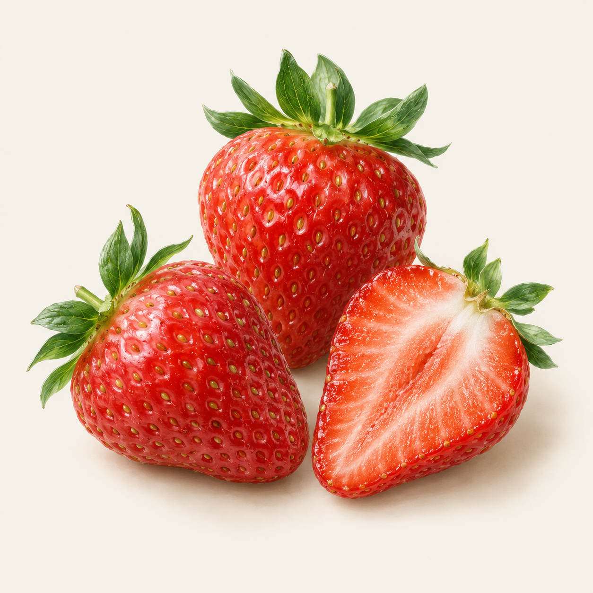

AN EXPLORATION OF FLAVOUR
让风味，有迹可循。
让每条来源、每种条件和每个未知，都参与判断。

找到值得尝试的组合
用实际品尝，完成最后一步。
THE TRANSFORMATION LIBRARY · 加工证据层
同一种食材，不同的风味路径。
从做法、想要的变化，或手边的食材出发。每条路径都保留原来的比较条件和来源。
加工方式索引
左右滑动表格，查看完整效果与记录数 →
FOLLOW THE EVIDENCE
全部加工记录
来源、分组方法与覆盖范围
YOUR STARTING POINT
你想寻找什么风味？
选择感兴趣的香气方向，探索有依据的原料候选。
可多选
文字命中保留原语境；相关食材的陈述不会直接变成当前食材的属性。
选中要替换的食材，逐一比较全部来源标示范围，并查看分子、滋味、质地与加工证据。
先选一种主食材，再加入你想探索的搭配。组合建议会标明已有依据和待试验部分。
搜索食材库
⌕
食材与加工状态点击选择
THE INGREDIENT EDIT
值得探索的食材
依香气标示与原书搭配信息排序。
正在展开食材图谱…
A FLAVOUR IN THE MAKING探索草案
从草莓开始，
想象下一种可能。
选择食材，观察香气之间的联系，把一个想法变成可试做的方向。
你的食材将在这里相遇
AROMA LANDSCAPE
香气轮廓
全部来源 · 不取代表值
图中展示原书标示的香气类别；覆盖更多类别，不代表强度更高或搭配更好。
AROMA · MOLECULES · TASTE · TEXTURE · PROCESS
每款食材的完整证据
WHY THIS COMBINATION
搭配的线索
选择食材后，可以在这里查看对应的香气与配对依据。